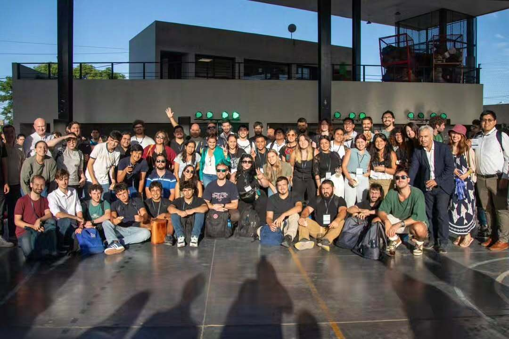
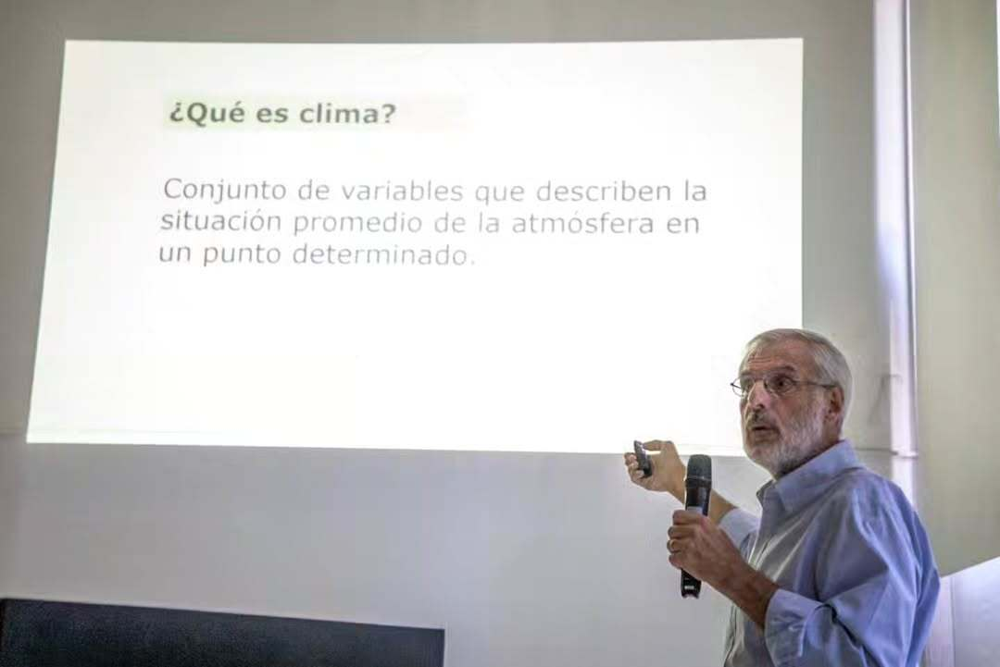
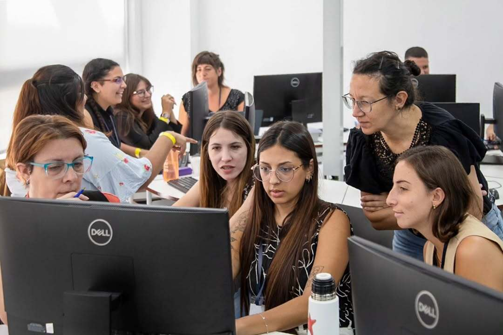
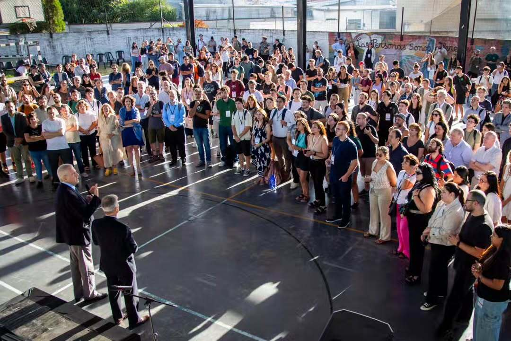

Nosotros
Nuestra Historia: De las Aulas a la Cumbre
El Despertar (Marzo 2026)
Todo comenzó en los pasillos y comunidades de redes sociales que
albergan a estudiantes de la UNAHUR. Ante la
inminente reforma de la
Ley 26.639 (Preservación de Glaciares), que busca
habilitar la actividad minera en áreas periglaciales, la comunidad
universitaria no pudo permanecer indiferente.
Lo que empezó como un debate en la materia
Debates políticos actuales
(común a todas las carreras de la universidad),
rápidamente se transformó en una
asamblea inter-institutos.
La Convergencia de Saberes
Nuestra ONG nació de la urgencia y la interdisciplina. No somos solo
activistas; somos la unión de estudiantes y graduados interpelados
por la realidad:
-
Instituto de Biotecnología: Aportando el
monitoreo satelital y el análisis del retroceso del hielo.
-
Instituto de Tecnología e Ingeniería:
Desarrollando herramientas de código abierto para denunciar
movimientos mineros en zonas prohibidas.
-
Instituto de Educación: Articulando el reclamo
con las comunidades locales y traduciendo la complejidad legal
para que todo el país entienda qué estamos perdiendo.
-
Instituto de Salud Comunitaria: Investigando y
alertando sobre el impacto del extractivismo en las cuencas
hídricas y el derecho fundamental al agua segura para las
poblaciones locales.
El Hito: El Manifiesto de la Montaña
En respuesta a los sucesos legislativos de este año, decidimos que
el conocimiento académico debía salir de las bibliotecas para
defender el territorio. Nos constituimos como organización para
profesionalizar el activismo estudiantil, bajo una premisa clara:
"El agua de mañana se defiende en las aulas de hoy. El agua NO se
vende".
Cronología de la Amenaza (2023 - 2026)
Diciembre 2023: El inicio
A solo semanas de asumir, el Ejecutivo envió al Congreso la
primera versión de la
"Ley Ómnibus". El proyecto incluía artículos para
modificar la Ley 26.639, buscando permitir la
actividad minera en el ambiente periglacial, una zona hasta
entonces protegida por su valor hídrico.
Año 2024: Resistencia y Retroceso
El capítulo ambiental enfrentó un rechazo masivo de científicos,
universidades y asambleas ciudadanas. Ante la presión social, el
gobierno retiró estos artículos para avanzar con otras reformas,
aunque mantuvo la intención de reformular la protección de los
glaciares en el corto plazo.
Año 2025: La Insistencia
Bajo el argumento de atraer inversiones para la extracción de
cobre y litio, se presentaron nuevos proyectos para "flexibilizar"
los criterios de protección. La propuesta central fue proteger
únicamente los glaciares con una
"función hídrica demostrable", dejando vulnerables a
miles de glaciares de escombros.
Abril 2026: El Conflicto Actual
Finalmente, el Congreso aprobó las modificaciones que eliminan la
protección automática del ambiente periglacial. Este suceso es el
que dispara la movilización de nuestra comunidad y la
consolidación de esta ONG como aliada de la
última línea de defensa frente al avance de las
mineras.
Misión
Defender la integridad de los glaciares y el ambiente periglacial
argentino mediante la
convergencia del conocimiento académico, el
activismo territorial y la vigilancia tecnológica. Trabajamos para
frenar el avance de proyectos extractivistas que vulneran la Ley
26.639 y ponen en riesgo las reservas estratégicas de agua dulce
del país.
Visión
Aspiramos a una Argentina donde los bienes comunes naturales sean
intocables para la especulación comercial. Proyectamos un futuro
donde la soberanía ambiental esté garantizada por
una ciudadanía informada y una comunidad universitaria activa que
lidere la protección de los ecosistemas más vulnerables frente al
cambio climático y la explotación minera.
Objetivos Estratégicos y Métricas de Impacto 2026
Para cumplir con nuestra misión, hemos definido ejes de acción inmediata. A la fecha, gracias al compromiso de la comunidad universitaria, hemos alcanzado los siguientes indicadores en nuestro territorio:
| Indicador de Gestión |
Logro Alcanzado (Alumnos/Asambleas) |
Meta Estratégica 2026 |
| Comunidad Universitaria |
4 Institutos UNAHUR Involucrados |
Consolidar la red inter-institutos |
| Estudiantes Movilizados |
+850 Alumnos alcanzados en talleres |
Llegar a 2000 estudiantes en aulas |
| Convocatoria en Marchas |
1.200 Personas en la última movilización |
Coordinar acción nacional con otras sedes |
| Vigilancia Tecnológica |
2 Herramientas de código abierto activas |
Lanzar plataforma de mapas satelitales |
Estos números respaldan las tareas operativas de cada uno de nuestros equipos:
-
Eje Científico-Tecnológico:
Establecer un sistema de monitoreo constante sobre los glaciares de la región andina utilizando datos satelitales abiertos.
-
Eje Legal y Normativo:
Impulsar acciones judiciales para frenar las autorizaciones de explotación minera en zonas de ambiente periglacial.
-
Eje de Salud y Territorio:
Realizar relevamientos sobre la calidad del agua en las comunidades locales que dependen directamente de las cuencas glaciares.
-
Eje de Comunicación y Formación:
Generar materiales educativos y asambleas abiertas para informar a la sociedad sobre el impacto de la reforma legislativa.
Nuestro equipo
Nuestro equipo somos nosotros, estamos por toda la universidad. Somos
los graduados, los alumnos, los docentes, los no-docentes y aquellos
quienes estar por llegar. Podes encontrarnos en todas partes y vos
tambien podes formar parte activamente de este proyecyo por la defensa
de aquello que nos interpela a todos:el agua y nuestros glaciares




Porque un glaciar perdido no regresa y si está en juego el agua, lo
que se pone en riesgo es el futuro de todas y todos nosotros, unidos y
organizados podemos lograr grandes cosas; enterate de como sumarte a
nosotros para poder formar parte activamente de nuestros
programas.
Sede de la oficina
FUNDACIÓN GLACIAR
"El agua de mañana se defiende en las aulas de hoy. El agua NO se
vende".